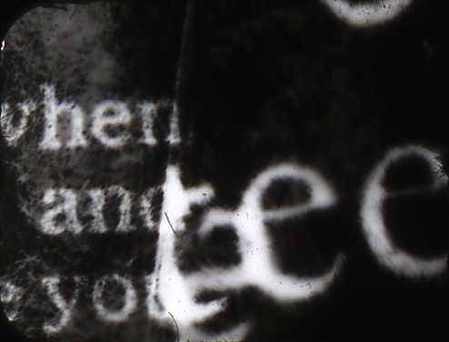
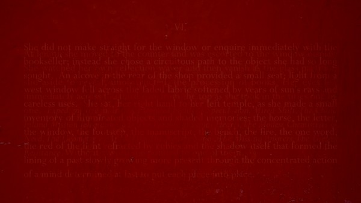
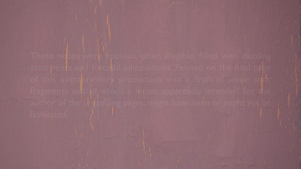
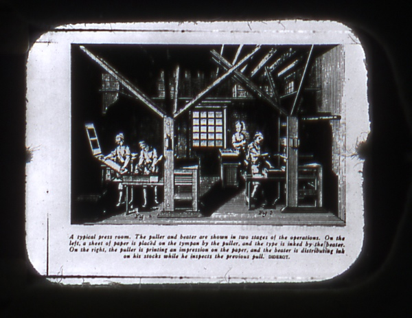
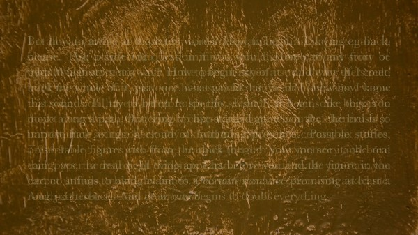
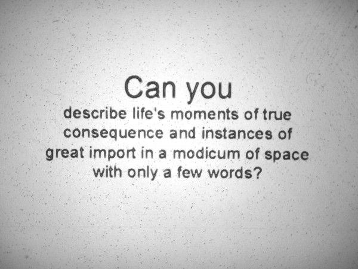
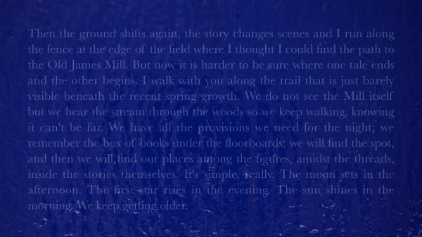
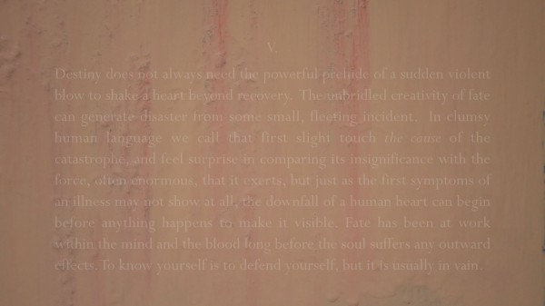
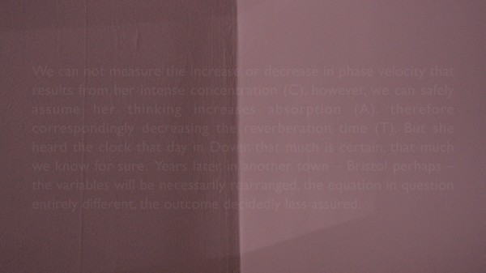

-
The Secret of a Happy Home: David Gatten on The Extravagant Shadows
by Aaron Cutler April 26, 2013

The idea is one of contingency. Everybody must feel that something has been missed, because electing one course of life precludes any other. But what in my case has been missed?
It was an October afternoon last year at the Brooklyn screening space UnionDocs, and our group of five was awaiting David Gatten. He arrived distinctly attired—small-lensed glasses, a scraggly beard, overalls, and a heavy knapsack, from which he removed prints of eight of his eighteen completed 16mm films. Some he hadn’t brought because he’d made them to be shown at an outdated projector speed; one was unavailable because his print remained in California under an old girlfriend’s care. But the films he had on hand he would project himself and discuss with us.
This is a frequent practice for Gatten, who was in New York for the world premiere of his latest work, The Extravagant Shadows, at the New York Film Festival’s Views from the Avant-Garde sidebar. We arranged our private screening because we might never see his remaining works otherwise. His films are unique art objects, rendering chances to view them rare. He explained that no more than three prints of any exist; some, like the What the Water Said series (unprocessed filmstrips exploding with sound and color, the product of Gatten leaving them floating in crab traps off the South Carolina coast), could never be reproduced. Each time a film of his runs through a projector, he said, it dies a little.
These delicate, fragile works need care and attention to survive, much like a key Gatten subject: love. And like much of the output of his self-professed model, Hollis Frampton (whose ode to his own maternal grandmother, Gloria! [1979], is Gatten’s favorite film), they devote themselves to building systematic frames within which love can be articulated. The frames are often made from forms of written language, whether densely coded Western Union messages (Film for Invisible Ink, case no. 323: ONCE UPON A TIME IN THE WEST [2010], prepared for his wedding to fellow filmmaker Erin Espelie) or phrases plucked out of direct, despairing summons written to a beloved from across an ocean (The Great Art of Knowing [2004]). His most celebrated project has been an ongoing nine-part film series, begun in the late 1990s, called The Secret History of the Dividing Line, with each entry named after a book belonging to 18th-century Richmond, Virginia founder William Byrd II, whose library contained over 4,000 volumes. The series’ four completed films, all silent (though Gatten prefers to call them quiet) and three of the four in black-and-white, tremble with close-ups of thick, richly engraved words soon to disappear from sight.
Moxon’s Mechanick Exercises, or the Doctrine of Handy-Works Applied to the Art of Printing
It takes words much longer to vanish in The Extravagant Shadows, Gatten’s first digital work, which will be screening again in New York (in a session curated by Views programmer Mark McElhatten) at Lincoln Center on Monday, April 29 at 7 P.M. with Gatten in person. They fade in, ghostlike, forming cryptic messages over layers of paint with which the artist has covered a bookcase’s glass front, then haunt the screen for several minutes as they fade back out. Though many originally come from other writers, including Stefan Zweig, Maurice Blanchot, and Henry James (from whose short story “The Jolly Corner” Gatten took Shadows’ title), the tale that they obliquely tell—made up of overlapping possible stories that lovers might share, if chance allows—is of Gatten’s invention.
How did you learn to read?
I cannot completely remember learning to read, but I know that books were always a tremendously important part of the household. We did not listen to a lot of music. Music was not on all the time, and was a very special event when it was played. Books formed the architecture of our home. My mother majored in Shakespeare at William & Mary. My father would read to us for an hour every night and my mother would read on the weekends. My earliest memories of literature are of having it read aloud to me. I am certain that Dr. Seuss was an important beginning, and I feel like I learned to read and took pleasure in reading early on. My parents would take us to the library every week, where we were allowed only three books. That wasn’t a library policy, but a family policy, which put into place an idea of scarcity, and a need to then choose carefully. Books were serious and special things. So I spent all of my allowance money on buying them.
My relationship to the written word became problematic when I tried to learn to write cursive, because in the 1970s in North Carolina public schools, if you were left-handed you were still referred to as “the Devil’s child.” As a left-handed person I was too much for the teacher, and was put in the corner with crayons to draw while everyone else learned to write. I have never had an easy relationship with my own handwriting, and in fact, much of the time I cannot read anything that I write. I believe that this problem has become a fundamentally important condition for my thinking about text as image in cinema, and issues of legibility and illegibility. Hardwood Process (1996) is largely a movie about my inability to read my own diary. The film has 14 sections, each beginning with a phrase. It’s all stuff that I couldn’t read, but that I knew was important. So I had to make images to complete the phrases. Even today, at age 41, I am still frequently unable to read something I have written by hand. I am still learning how to read on a daily basis.
How?
I’ve learned to read very differently based on the kind of books I have been reading. David Markson is one of the two “skeleton key” writers that have inspired and informed my cinema—the other being Susan Howe, especially her book The Non-Conformist’s Memorial (1993), and within it the poem “Melville’s Marginalia.” Although my method of writing and condensing writing was pretty well developed by the time I read Markson’s This Is Not a Novel in 2001, I feel I was deeply altered by it—and then also by a subsequent reading of Vanishing Point (2004). I found it both one of the funniest and one of the most emotionally devastating reading experiences of my life. I think there could never have been the Films for Invisible Ink [a series of films specifically made for friends and loved ones]—especially the first one, Film for Invisible Ink, case no. 71: BASE-PLUS-FOG (2006) [made for Gatten’s first wife, Weena Perry]—without it. And I’ve been going to school with Markson ever since. Those last five novels of his speak so strongly and directly to a poetic and narrative strategy that I find moving as a reader and, at this point one happily and nearly inevitability at play in my own work as a filmmaker. Touchstone works by a writer of enormous humanity.
I also learned how to read over the last seven years from reading Henry James.How did James inform The Extravagant Shadows?
“The Birthplace,” the short tale in which the young couple is caretaking Shakespeare’s cottage, is the first James text that appears. It initiates a narrative about a young couple going to live in a place that is inhabited by a spirit they can’t see, but with whom they want to commune. I used this tale as the launching pad. It immediately seemed related to, but different from, the James tale, “The Jolly Corner,” which is about a man who is going back to a house that he owns but hasn’t been to for years, and who, as he starts to visit it, also starts to recognize the life he might have led. “The Jolly Corner” is, in my reading, very much about a consideration of another self. Those two stories I had read many years before and confused. They had been condensing for years in my brain before I came back to try and capture something of them on paper.
So there were situations and a narrative thematic that James provided immediately. But much more important was the way in which he deploys language to describe a series of events, which might be actions in the external world or the internal clockworks of emotions and of decision-making processes. The way he will circle around something, with the most important things being what he leaves unsaid. He makes beautiful outlines with language. I was interested in the specific instances of language he uses to do that, but also in his greater approach to storytelling. All of the storytelling in The Extravagant Shadows is based in a late Jamesian mode of proceeding through an event, an idea, a character, or an emotion.
The Extravagant Shadows
James is there in almost every panel of text. I wrote most of the text myself, but I was writing in relation to James almost the entire time. James makes visible the process of thought, which of course happens very fast, but through his use of language, he slows it down so that we are able to understand someone else’s thinking. A character’s, but also his own, with all the hesitations and circling back in slow motion, which allows for analytic examination. With The Extravagant Shadows I’m trying to do that. I don’t think it’s a slow film, but it is a place to reside in for a long time. I hope that there is a lot of time to consider small details, whether those are details of language, of paint, or of light shifting.
How did The Extravagant Shadows form?
I have always worked slowly, but the older I get the slower I am working, and the longer I am willing to work on a project. The Extravagant Shadows began in 1998 with an idea about certain pieces of language, based in Blanchot. I knew I wanted to make a work where language was staging itself very, very slowly, much more slowly than I could accomplish with what I knew about filmmaking at the time. I was in graduate school at the School of the Art Institute of Chicago, and was doing a lot of contact printing and optical printing. On a contact printer the longest fade you can have is 96 frames, or four seconds. On a small JK optical printer it’s very difficult to make something longer than four seconds, and I knew I wanted fades to last minutes, and for things to hover on the edge of legibility for minutes. I knew that I wanted to work with an analogue video image and text generating, so that I could have a different kind of control over time. I assumed that this work was going to be an analogue tape. There was very little text then compared to what there is now. It was going to be a much shorter piece, maybe half an hour long. But I didn’t know how to make it, and it wasn’t urgent to make at that moment, and other projects took over. This was at the same time that I was discovering the Byrd project, and that took hold strong. So The Extravagant Shadows, which wasn’t even called that then (I think it was called Area Effect), just sat.
I came back to it a few years later and fiddled with the text some more. A lot of what I do in the studio is sit and write. I’m not always working with strips of film. I’m not always in the darkroom. It is often reading and writing. The studio is a place to consider words, and to structure my own words, as well as to produce images. So I would write. Sometimes if I got stuck on another project I would return, but I mainly kept putting it aside, and putting it aside. I’d shot some stuff on VHS that didn’t have anything to do with the images that we’re looking at now. I was actually shooting a TV monitor of a snowstorm on bad antennae reception. There was the snow of the storm that the weather channel was covering and there was the snow on the screen itself, and that was serving as a background for these words to emerge from. And I thought that that was interesting, but I wasn’t wild about it. I knew at a certain point that I was going to work with a mini-DV camera, but that didn’t end up going anywhere either.
Then I moved to New York in 2006, finished the first Invisible Ink film, BASE-PLUS-FOG, and went back to what, at that point, I knew to be The Extravagant Shadows. I was reading Henry James on a daily basis, and conversing with a friend who was also reading James. We would wake up every morning, call each other, and ask, “What’d you read last night? How was it?” For two years we were reading James almost every day. Mostly not the novels—mostly it was the tales. We systematically made our way through nearly all 112 tales, and talked about them, and that is when the piece started to find the shape that it has now. I knew it was going to have a Jamesian structure, that the characters, the situations, the ambiguities, the events would have something to do with the way James represented the world through language. And that there would be phrases, but that I was going to write through them, around them, and to connect things from a dozen of the different tales to make a new story that doesn’t exist in any James tale, that doesn’t exist in any Blanchot book, but that borrowed from and condensed them.
I use the term “condensation” in relation to texts. I am trying to build cinematic structures that replicate the process of condensation within a glass of water, allowing for things that are in the air to be fixed, find new form, and group together as visible, light-catching substances. What I’m trying to pull out of the air is language. These cultural productions that exist as books, I’m trying to build a cinematic structure to condense them. It’s an active reading process, first of all. It’s recognizing that this phrase connects to this phrase, and that if there’s this idea here, and there’s another idea 18 inches away, I’ve got to then use language to make the connection to draw these two things together. I believe that poetry often operates as a kind of condensation which functions through ellipsis, an economy of means, and a high level of organization. Shape is important in poetry. It’s deeply important in prose as well, but there it’s articulated in a different way, and often at a different length. I am trying to boil down experience and language into a smaller vessel. I am still working out this poetics, and am just starting to understand it as a tool, rather than something that I recognize that I do. I didn’t say, when I started doing this, “Now I will condense this text.” I just found myself doing it, and it was during the last couple of years of writing The Extravagant Shadows that I came to understand it as an approach that I can apply to any existing text to make a set of new meanings. To take, as I do, a Wallace Stevens poem, “Description Without Place,” and condense it into 24 lines by taking certain ideas, leapfrogging over others, and forming a new poem. With Stevens, with James, with Blanchot.
That writing process took up a lot of time. But it was only once I started teaching at Duke University in 2010, and once Erin and I moved to the cottage we live in when we are at Duke, that things really coalesced. I started shooting the cottage walls because I love the colors the walls are painted, which were the existing colors when we moved in. Home is really Salinas, Colorado, all of our things are in the cabin there, and the Durham cottage is quite minimal by comparison. We don’t put things on the cottage walls. The walls are painted, and the paint is beautiful. I felt that the walls were speaking.
In 2011, I started filming—not filming, but shooting with Erin’s Nikon D-7000. I started making images and recording sound in the cottage. I was so inspired by the paint that I wanted to start painting myself, mix paints, and experiment with layering colors and producing effects of color and light rendered digitally. All of the painting that we see in the final form of The Extravagant Shadows was performed in May, June, and July of 2012 in Colorado outside the cabin. It was very important to do the painting outside, where the clouds could move across the sun and change the color temperature and affect that world of paint. I didn’t want it to be a static, studio-lit situation. I wanted low relative humidity to help the paint dry, and I wanted the paint to be alive to the changing of light.
So it was a circuitous path, with a lot of stop-and-start. And then, as there often is, there came a moment when I could think about nothing else. I was intending to finish the new Byrd film, but The Extravagant Shadows said, “No.” I was so surprised. I’ve been making work for a while, and I know what I’m doing as a 16mm filmmaker. I’m deeply surprised about what happened with digital cinema and The Extravagant Shadows.
What is your background in painting?
It stretches all the way back to May of 2012. I had never painted anything before then, except for places where I had lived, where I was just painting the walls. I wasn’t painting pictures, I was applying paint, which I like to do, but I had never painted before. I like to look at paintings a lot, though. Adriaen Coorte’s painting White Asparagus at the Rijksmuseum in Amsterdam—in which the white paint has faded to the point at which the image of the asparagus is really a translucent ghost of itself—is probably my favorite painting. And then I often think most of my filmmaking operates in relation to experiences I’ve had with Agnes Martin’s work.
Part of what I’m interested in in cinema is exploring materials. With the What the Water Said project, I put into play the substances of the ocean, the river, and the filmstrip. I didn’t know what was going to happen—all I did was throw the celluloid into the water. With The Extravagant Shadows I chose different kinds of paints. I chose oil-based enamel paint and acrylic paint, and I layered those on top of each other and let them make the picture. I didn’t control—I just wanted to see what would happen with the relative humidity of the air, the intensity of the sunlight, and the way that those paints reacted to each other. They’re not made to be used in tandem like that. So it was about letting the materials articulate themselves.
The Extravagant Shadows
As the movie goes on, I start to do things with the brush to provide different conditions for them to articulate themselves into different kinds of images. The paintbrush starts to activate different characteristics of the paint. It starts to layer or smudge things, or work with one layer before the other layer is completely dry. I was learning. I was listening and watching the paint as the shoot went on, and trying to respond to what I was learning. I then started making some paintings, but found that they weren’t interesting to me. What I was interested in was seeing paint dry. As soon as the paint would dry, I would apply more paint, so that it was never dry and always drying. The painting never finishes. It never stabilizes. It’s always changing.
What are the extravagant shadows?
For me, first and foremost, they are language. It’s the words themselves—and the ideas, stories and emotions they describe—that can’t be contained, erased, painted over. They are so extravagant that they cannot be effaced. I was keenly aware when making this that it was a digital work, and that as a digital work, it in some ways flew in the face of the aesthetics of the mostly black-and-white 16mm Byrd work—and most everything else I’ve made. And many of those films—The Great Art of Knowing [second film in the Byrd sequence], The Enjoyment of Reading (Lost and Found) [2001, fourth film in the Byrd sequence], the new, still-unfinished Byrd film in particular—are filled with shadows, with dappled light, with extravagant expressions of light and dark, kinetic (and I believe beautiful) expressions of light modulated through shadow. Those films are filled with extravagant shadows. My guess is that when people see this new title and think of my work, they’re thinking of visual shadows. But I wanted to get at something less literal. The early gesture of painting out the books is, I think, a notice that this isn’t going to be the same space. We’re not going to be considering the book-as-object. We’re going to be considering what the book contains, and what it might evoke, as opposed to represent. There are shadows in this digital work, and there are reflections, but they are considerably more subtle, although perhaps no less extravagant, than in the 16mm work.
Do you feel these shadows coming to life?
That’s the goal, and I hope they do. I ‘m moved that viewers thus far have seemed so committed to giving them life through their attention. That’s the only way they can come to life—through someone’s concentrated and generous imagination.
There are certain kinds of movie experiences—which I love having—where everything is largely determined. If you go to see the Lord of the Rings movies or the Jason Bourne films or a Soderbergh in a certain mode, then you are going to live inside a world that is built almost airtight and perfectly articulated. You will identify with characters, you will lose yourself, the meaning is blazing off the screen, and you are actively subsumed in it. This is one kind of experience, which commercial cinema frequently seeks to produce.
My background of consuming and enjoying that probably helped me conceive work that was different from commercial cinema, and closer to the aesthetic experience of the fine arts. I admire the idea of the oppositional cinema, but what I’m making is just in favor of itself, and not necessarily opposed to something else—I like the other thing too, it just isn’t what I’m doing. I prefer to think of cinema as an ecosystem with different kinds of works existing at various points along a continuum rather than simply being in opposition to each other. For the kind of experience I seek, I don’t want anyone to forget who they are or where they are, and I want my viewers to be active in a different way. I want the chief activity to be that of the viewer approaching the screen, and for the meaning of the work not to be inherent, but rather to be a product of someone’s engagement with it.
Now, that is not to say that anything goes.Rather, it means that my job as a filmmaker is to define a field of play containing multiple paths. This is what Umberto Eco describes in his great book, The Open Work (1962). When I encountered that book in graduate school it articulated many things that I was feeling about experimental and avant-garde cinema and that I admired, but that I couldn’t articulate for myself.
Moxon’s Mechanick Exercise, or the Doctrine of Handy-Works Applied to the Art of Printing
Why don’t you attribute the source texts in The Extravagant Shadows?
I have made some attempt at attribution in the printed material, but not in the work itself. I use other peoples’ texts in almost everything I make. Quite often there are attributions at the end of the films, and quite often there are not. My name appears at the end of some works and not in others. Because that is a shot, it’s not just credits. That’s the last shot of the movie. I am thinking about these things as images. I could not possibly end Secret History of the Dividing Line [2002, first film in the Byrd sequence] after the words “Here ends the Secret History” by then putting “David Gatten 2002.” That would be preposterous. That would be another image. Here would not have ended the secret history: it wouldn’t be over yet. I would never put my name at the end of The Great Art of Knowing. That would be like a desecration of what I was trying to do. Yet at the end of the next two Byrd films, I not only refer to texts, but my name is on the films. In Moxon’s Mechanick Exercises, or the Doctrine of Handy-Works Applied to the Art of Printing [1999, third film in the Byrd sequence] I cite the translations, the translators, sometimes the press itself, because that was a book about translation and the printing press, and so that is an appropriate image with which to end that film. That wasn’t an image that I wanted to end The Extravagant Shadows with. I wasn’t going to go to a black screen after those books. The last image of that film had to be book spines. So there was not an appropriate place within the image sequence to put that attribution information. It’s not secret. It’s not that I don’t want people to know. It’s just that there is not an appropriate place to relate that onscreen. It’s an aesthetic concern. Other filmmakers often use credits as bookends. For me they’re covers.
Did you see a similarity in the relationships between celluloid and digital photography and between the physical book and digital text?
I didn’t think much about digital text—in the form of electronic books or reader devices per se. I’ve seen people on the subway carrying these E-readers, but I’ve never actually held one nor tried to read from one. So I suppose it is amusing at some level that I’ve made a three-hour movie that is all digital text and is essentially an electronic reader. I really wasn’t thinking about it in those terms while making it—I was more concerned with, and interested in, the difference between working with celluloid film titles and computer-generated text. Of course we’re going through a tremendous change in print culture—we can’t even call it print culture anymore—reading culture—in the same way that we are going through a transition with the moving image. I have addressed this before. The transition from celluloid to digital I was trying to get at in 1999, when I made Moxon’s Mechanick Exercises. Joseph Moxon produced the first manual of style to tell printers how to print. I was trying to go back to the moment when we moved from scribal reproduction to mechanical reproduction of texts with Gutenberg’s invention of the printing press and the printing of the Gutenberg Bible. One can then draw the celluloid-digital analogy within The Extravagant Shadows, where at the beginning I put the books away and then bring out the text. The object disappears, but the text persists. I suppose at that level it is some sort of comment on the status of the book in the 21st century.
It is largely a quiet film, but there is some sound. How did you make your soundtrack choices?
The music—five songs from a 1968 Merrilee Rush album called Angel of the Morning—I took as the soundtrack. I was interested in using those songs as texts in the exact same way I was considering works by Henry James, Stefan Zweig, Roger Gard, and Lao Yee-Cheung. They are conveying narrative information, in a voice that has emotion and phrasing. I was thinking of the songs as another set of texts, manifesting language differently. Not just onscreen, visual language, but sung language. And all of those songs have particular emotional dynamics that intersect with some of the narrative thrust or the situations in the other texts.
The Extravagant Shadows
That’s about the music. One of the big differences between shooting 16mm film on a Bolex and shooting digital images on a Nikon D-7000 is that the digital camera assumes sound. It automatically records synchronous sound, whereas a Bolex does not. It’s actually tortuously difficult to record synchronous sound in film. You’ve really got to make a point of it. And with a Digital SLR (DSLR) you’ve got to turn off the sound. You’ve got to go to a bit of trouble to make it a silent recording. So it felt important to acknowledge that, and to let there be a moment where the image gains dimension through the genuine synchronous sound of a particular place. I make that gesture at the moment in the movie when I want to address sound. Up to that point—one hour and 18 minutes—there has been a lot of mention of sounds and spoken language. In all sections of the narrative thus far, the text speaks about characters hearing things. So I hope that we are primed as viewers to already be thinking about what it means to hear something. I then wanted us to hear something, and then I wanted that to go away. It was important to explore something that I had never explored before, but that is inherent in working with a new digital camera.
A few days before I saw the film, you told me that Hollis Frampton’s film Gloria! would help me make better sense of it. It might have been because of the way that Frampton uses music. How do you see the usage of music in the two films as synchronous, and what other synchronicities do you see?
When I saw Gloria!, I felt Frampton was almost reminding me that music is appropriate, in the same way that I think he reminded a lot of people that language is an appropriate area of exploration. Coming out of an American avant-garde cinema as articulated by Stan Brakhage, which was largely about a perception beyond or before language, Frampton brought us back to language. And I experienced very powerfully his use of music. But it’s not just the use of music in Gloria! that is important in relation to The Extravagant Shadows. That music has been described in language before we ever hear it. It’s an example of a seed that he plants. In one of those statements about his grandmother, he describes the music, so when the music comes on later there is a recognition. We have an epiphany that now we are hearing the wedding music. So it’s not just that the music is there, it’s that we know what this music is based on a prior experience we’ve had. We have learned something. The relationship between language and music in Gloria!—very different than Bruce Conner or Lewis Klahr or Bruce Baillie’s powerful usages of music—helped me understand what was possible. Frampton was setting us up for music to mean something within a context that he had already provided for us.
I was completely knocked out by this way of structuring an emotional experience. So I wanted to explore it myself. Long before “Angel of the Morning” comes on, bits of the lyrics are onscreen. You would have to be a Merrilee Rush fan and know that song pretty well to recognize some of the early phrases, but it is certainly my hope that, after the songs have come on and lyrics continue to appear, you make that connection.
You studied acting when you were younger. How has your actor’s training informed your filmmaking?
I sometimes think of myself not as a filmmaker per se, but a performer, and that I use these films as highly elaborate and painstakingly crafted props. Because I believe that when I’m lucky enough to be present and speaking with a film that what I say beforehand and afterwards is part of my work as an artist. Both the work of speaking and the work that occurs onscreen have to do with activating public space and putting into play a range of ideas. I don’t believe that the work that is on screen must stand alone. Nothing stands alone. Everything operates within a context. Some contexts are more familiar than others, but everything has one, and so I am interested in what happens when I plant seeds in an introduction to a piece of work. That’s part of the composition. It was a strategic decision to begin the premiere of The Extravagant Shadows by speaking about Eric Gill, who is never referred to explicitly within the film itself, although if you know the typeface Gill Sans, you see that a lot of the type is set in Gill Sans and a lot is set in Perpetua, and that there are locations in the film that figured into Eric Gill’s life. I hoped that there would be little moments of recognition. That is where the theater background comes in, because it’s a bit of a performance—it’s thought out—it is part of the composition.
Film for Invisible Ink, case no. 323: ONCE UPON A TIME IN THE WEST
The other way in which being on stage for about a decade has affected my filmmaking is that it made possible, right away, a certain comfort level with, and really, an interest in, the performative aspects of being a teacher. I’m proud of the work that I have done in the classroom and I am grateful that my various academic teaching jobs have provided a structure, both temporally and economically, for me to continue my filmmaking practice. I feel I have been successful as a teacher in large measure because of how I am able to combine what I know and what I believe about cinema with what I am able to do in the classroom as a performer. This has in turn now informed my ideas of how to structure a three-hour block of time with the moving image. At Duke I teach a three-and-a-half-hour class twice a week, and each class is its own composition. I write an essay and I speak each word, I memorize 95 percent of it so that I can mostly deliver it as a monologue, and I try to structure the articulation of meaning in the classroom in the same way that I try to in The Extravagant Shadows. These last three years mark the first time in this 16-year period when I have been making films and teaching that the practices have intersected and are traveling alongside each other.
How so?
Largely through thinking about how meaning accrues in the classroom. I got more interested in thinking about those strategies partly based on some film materials I was working with. In 2001 my grad school friend Ken Eisenstein sent me several 3 x 5 instructional pamphlets from the Little Blue Book series (1919-1978)—How to Write Letters for All Occasions, Home Vegetable Gardening, and The Enjoyment of Reading. This Little Blue Book series is kind of astonishing. Over a thousand of these things on nearly every possible topic that you could ever want to know anything about. What You Need to Know About Phrenology. How to Conduct a Love Affair. I was fascinated by these didactic texts. They then became important in several of my films. These were my first works of condensation as a writing process. The film The Enjoyment of Reading (Lost and Found), which begins with five screens of condensed text from the pamphlet The Enjoyment of Reading, is the very first. Do I need an instructional text about these things, and in what ways do these reduce one’s experience of the world?
My theory of pedagogy at this point, having taught for 16 years and watched things work and fail in the classroom, is that it is most interesting to proceed first by producing a kind of confusion for students. My idea is that, in any given class, the first half should be about the production of a confusion that encourages curiosity while destabilizing a student’s comfort level with the material. Everything I do should raise questions. “Why is he talking about that? How is that relevant to film? He’s talking about music, he’s talking about poetry, he’s talking about opera, he’s talking about gardening. How does this have anything to do with a film class?” And then the second half of class should exist partially in order to relieve some of that confusion, but in a way that is, again, like planting seeds that are going to blossom into a series of recognitions later. I am not telling them something, they have to make the connections themselves. They have to be present, alert. But then when they do make that recognition, it’s far more powerful than if I had just told them the answer to begin with, because they’re discovering it on their own. So by the end of a class, I hope that 90 percent of the confusion is relieved through a series of revelations, and if it’s really going well, epiphanies, that then transmute that last 10 percent of confusion into mystery. And that mystery is what propels you to the next class, where it changes back into confusion. And so on.
The Extravagant Shadows
That’s what I’m trying to do each week in the classroom, and increasingly in my filmmaking. Film for Invisible Ink, case no. 323: ONCE UPON A TIME IN THE WEST is a prime example. “What is this? How are these phrases related to anything?” But I hope that by the end, some sort of transmutation has taken place, and that these things that were simply Western Union telegraphic code phrases now take on new meanings in the context of a series of wedding vows. The Extravagant Shadows is the fullest exploration of this way of working, and the deepest I’ve gone into planning nested stories, setting things up that pay off later, while being at peace with the risk of confusing viewers for 15 or 20 minutes so that an hour and a half down the line it becomes clear from context why that material was there.
Who are the human figures in the film?
Well, visually, there’s my reflection in the window and in the paint, with my hand blocking light, or my body blocking sunlight. It’s one of the relatively few times that a human body has appeared in my cinema. I didn’t initially decide to present myself. I saw that I was reflected in the glass, and had to consider whether to eliminate my image. And I decided that it was appropriate to see me. Since you were already going to see my hand, it’s not off the table to see the reflection of my whole body.
The other human figures in the film are people that I’ve encountered in books and appear in the movie represented by language. Some are characters—or composites of characters—from stories by James and Blanchot. I recognize one of them as being Henry James himself. And I recognize two of them as being Erin and myself. And I think that at this early stage of getting to know this new work that’s all I’ll say about them.
What is your interest in ghost stories?
They form one manifestation of my interest in desire across distance, whether temporal or geographic. There is something that can’t quite be reached, present but immaterial, that is the haunting. It is the past manifested imperfectly in the present. It’s a cultural form with which we are familiar, and therefore fertile as one way to articulate the difficulty of desire.
The Extravagant Shadows
Desire, of course, is connected to love, which I first learned about from watching my parents. I have a very good model, and learned by example. They take a lot of care with each other, and they were never afraid to speak to me about the care that they take. I always knew that they loved each other, but that that was not sufficient. You have to take care with that love. Love is a thing that is both robust and fragile, and so you have to care for it. I also learned about love from books. M. M. Kaye’s The Far Pavilions (1978) was a childhood experience of a story about love across time and space that has certainly informed what I do in the cinema. And not just the book, but also that 1983 HBO miniseries adaptation starring Ben Cross, Amy Irving, Omar Sharif, and Christopher Lee. That was a major, major thing for a 12-year-old boy thinking about love, and that’s reverberated throughout my life and my filmmaking, in the same way that Edith Wharton’s novel The Age of Innocence (1920) has.
I have also learned about love from being married to Weena. At that time I wasn’t ready to be a good partner or a good husband. I was struggling so hard to be a filmmaker and a film teacher and a good husband that all three of those things suffered. That was a hard time, and I still have deep sadness from having failed at it. But it taught me what was required of me. I have since learned about love, and how to love, on a daily basis with Erin. I am trying very hard not to make the same mistakes. I make other mistakes. I make new mistakes all the time. But that’s part of learning.
How is Erin in The Extravagant Shadows?
I’m maybe a little hesitant to even answer that. But in a way I already have, I guess. At one level she—well, both of us, really, are characters in it. We appear as figures in the text. She reads aloud to me when I cook, and I read aloud to her when she cooks, and she reads aloud while I do the dishes. We live in an old gold mining cabin when in Colorado and a little cottage when we are at Duke, so for me, the couple in the cottage, with the lamplight, is very much a representation of our engagement with literature and how we share literature through reading aloud to each other. That story is one of the frames for The Extravagant Shadows. And that act is one of the frames for our daily life.
The Extravagant Shadows
That’s how I’d say she is in it explicitly. But she’s in it in other ways that I don’t yet know how to articulate, because this work is so new to me that I am still learning about it. I’m not sure I can nail down specific things. It’s maybe too soon to do that. But the premiere at Lincoln Center was the first time that Erin had seen it. It was a very interesting experience, with the press screening happening 10 days beforehand, and all these people seeing it and talking about it and some stuff going online, which Erin read before seeing the movie. I then sat next to her and felt some of her reactions. I was watching the movie, but I was also highly aware of her on my left responding… recognizing certain things. That was a powerful experience for me—to have, in a way, made this work for her, and then to have her receive it. It was the giving of a gift. And it’s not the first gift of cinema I’ve given her. I was thinking about our wedding and that film as well.
Happily, she had a very good experience of the work at the screening. Afterwards we went to Café Luxembourg, where we had had our first date, with a big group of people, and then we went just the two of us and sat in a little pizza café and talked for two hours about the movie and the screening. It was tremendously important to get that space for just the two of us and talk about what had happened. It was rewarding for me to have her response. And she is an amazing viewer.
What does contingency mean to you?
That’s where the movie starts, with that text: “The idea is one of contingency.” One has to make choices. One can’t live every life or do everything. I’d like to think that if we make careful choices, then our decisions in the life we do lead might redeem or recognize the lives we did not lead. As the film’s text also says, “What tenderness of attention might mitigate battered experience.”
The Extravagant Shadows feels like a major experience in my life. It’s coming at an important moment, in which I’ve just been honored with a “mid-career” retrospective [“Texts of Light: A Mid-Career Retrospective of Fourteen Films by David Gatten,” curated by Chris Stults and organized by the Wexner Center for the Arts] that traveled around the U.S. in 2011 and 2012. I had a year to think about what I have been able to do so far. What is my cinema at the mid-career? I feel a sense of peace right now with having made a contribution to a conversation that I care deeply about, and I am very proud, I think, that my contribution has been valued by other people who are also taking part in the discussion. And so I hope that, in any larger consideration of my life, this work will stand out as something that consolidates, while exploring more deeply and in a different fashion, concerns that have been with me since the beginning. I don’t envision it as being a pivot or a shift, but I hope that it is seen as a flowering of seeds that took a long time to come to the surface. Whatever happens next will certainly affect how The Extravagant Shadows is seen in the future. But what happens next I don’t know.
One way that I see the progression of my films is as a narrative. I think that’s why I am able to bounce between completely different kinds of articulation. The Continuous Quantities project, a series of films in which every shot is 29 frames [modeled after Leonardo da Vinci’s division of an hour into 3,000 equal parts], is so vastly different as a way of thinking about montage from The Great Art of Knowing. But it’s all part of a larger narrative or inquiry about the relationship between different systems of representation, language, and image, and about articulating meaning between them. In the end I think it’s all one project.